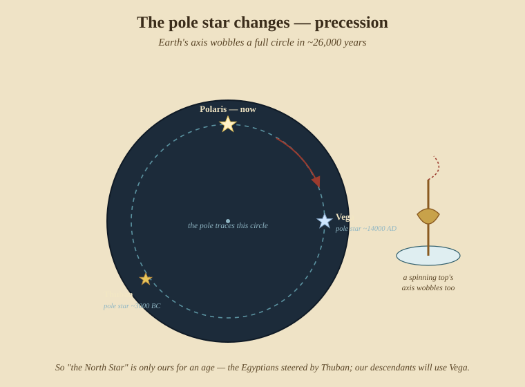

Putting It Together
Everything in this book is one skill seen from different sides: knowing where you are well enough to get where you’re going. This last part walks a whole passage through the methods, sets the craft in its history, looks at how even the pole star changes, and closes with the tools you’d actually carry and the books worth reading next.
29. A passage, worked from first principles
Picture a westbound ocean crossing in the age of sail. Here is the navigation, day by day, drawing on every part of the book.
Departure. You leave a known harbour — a perfect fix (Part VI): you are at the charted position. From here on, everything is reckoned forward.
The routing. You don’t point straight at the destination. You sail south into the trade winds and let them carry you west (Part VII, §27) — the belt, not the rhumb line, is the fast road.
Every watch. The helmsman steers a compass course; you convert it to a true course with variation and deviation (Part V, §17). The log is hove each hour for speed (§16). From course and distance you work the traverse into a running dead-reckoning position (§18), and adjust it for the set and drift of the current into an estimated position (§19). The DR is your continuous truth between fixes.
Each clear day. You tighten the DR with the sky:
- Dawn stars — three or four star sights in twilight, reduced by the intercept method and crossed for a fix (Part IV).
- Forenoon — a Sun line for longitude, using the chronometer’s Greenwich time (Part III) or an intercept LOP.
- Noon — the meridian altitude of the Sun for latitude, the day’s anchor (Part II, §7).
- Afternoon — a second Sun line, run up to cross the forenoon’s for a running fix (Part IV, §14).
- Dusk stars — another twilight fix, and the DR reset to it for the night.
Overcast and fog. No sky. You navigate wholly by DR and EP — the reason the craft treats reckoning as the backbone, not the fallback — cross-checking heading against the swell when you can feel it (§26).
Landfall. As the ocean crossing ends, the DR says land is near but not where to a mile. You widen the target with signs of land (§28) — the evening flight of birds, a standing cloud, the greenish loom of a lagoon, the cross-run of refracted swell. Then, closing the coast, you switch to piloting: bearings to the first headland and light, transits to run the safe line, the lead line sounding a line of depths that matches the chart (Part VI). The cocked hat of three bearings shrinks to a point, and you have arrived — the passage closed the way it opened, with a fix.
That single voyage uses every technique in this book, each covering the others’ blind spots. That mutual backup is the craft.
30. How the craft was won — a short history
The methods in this book were assembled over three thousand years. The shape of the story:
- Antiquity. Phoenician and Greek sailors coast-piloted by landmarks, lead, and star lore. Hipparchus (~150 BC) built the trigonometry and the latitude/ longitude idea; Ptolemy (~150 AD) mapped the known world — but longitude was unreachable without time. In the Pacific, wholly independently, the Oceanic voyagers were already crossing open ocean by stars, swell, and signs.
- The Islamic golden age. Astronomers perfected the astrolabe and precise star tables; Indian-Ocean pilots used the kamal and the monsoons, a tradition culminating in Ahmad ibn Mājid (15th c.).
- The Portuguese school (15th c.). Under Prince Henry the Navigator, the regimento rules for latitude by Polaris and the noon Sun turned astronomy into a shipboard routine, with Zacuto’s declination tables (1496). This is the navigation of the great voyages of discovery.
- The chart (1569). Mercator’s projection made a compass course a straight line; Edward Wright (1599) gave it its mathematics.
- The instrument (1731 / 1757). Hadley and Godfrey’s reflecting octant, extended into Bird’s sextant, made precise altitudes possible from a moving deck.
- The longitude solved (1714–1767). The British Longitude Act prize drove John Harrison’s sea-clocks (H4, 1761), while Maskelyne’s Nautical Almanac (1767) made lunar distances practical from Greenwich — two rival answers to the same problem, both working.
- The line of position (1837 / 1875). Sumner’s accidental line and Marcq de Saint-Hilaire’s intercept method unified every sight into “a line you’re on,” the system still taught today.
- The tables and the end of the era (20th c.). Printed sight-reduction tables made reduction a look-up; then, in the 1990s, GPS made the whole sextant craft optional — which is exactly why it’s worth keeping alive as the thing that still works when the satellites don’t.
31. The pole star changes — precession
One humbling footnote to close the astronomy. “The North Star” is not permanent. Earth’s axis slowly wobbles, like a spinning top, tracing a full circle among the stars over about 26,000 years:

So the pole drifts among different stars over the ages. Thuban, in Draco, was the pole star of the ancient Egyptians (~3000 BC); Polaris is merely our age’s; in roughly 12,000 years Vega will take the role. The techniques don’t change — the pole’s height is still your latitude — but which star marks it does. It’s a reminder that even the fixed points of navigation are only fixed on a human timescale.
32. What you actually carry
The methods need surprisingly little, but that little is essential:
- A sextant, to measure altitudes (Part I).
- An accurate Greenwich clock — a rated chronometer, checked daily (Part III).
- The Nautical Almanac for the year — where every body is, at every instant of Greenwich time; the noon sight and every reduction depend on it.
- Sight-reduction tables (or the trig, or a calculator) to turn a sight into an Hc and azimuth (Part IV).
- A magnetic compass and the vessel’s deviation card (Part V).
- A chip log and a watch for speed; a lead line for depth (Parts V, VI).
- Mercator charts, parallel rule, dividers, pencil — the plot (Part VI).
Everything else is skill, arithmetic, and the discipline of checking twice.
Appendix A — Glossary
- Altitude (Ho) — a body’s corrected height above the horizon.
- Azimuth (Zn) — a body’s true bearing.
- Declination — a body’s latitude on the celestial sphere (from the almanac).
- GHA / LHA — Greenwich / Local Hour Angle: how far west of Greenwich / of you a body’s meridian lies.
- GP (geographical position) — the spot on Earth directly beneath a body.
- Zenith distance (z) — 90° − altitude; angle from straight up to the body.
- DR / EP — dead-reckoning position / estimated position (DR plus set & drift).
- Variation / Deviation — compass error from the Earth / from the ship’s iron.
- Departure — east–west distance in nautical miles.
- Rhumb line — a course of constant compass bearing; straight on a Mercator chart.
- LOP — line of position; you are somewhere on it.
- Set / Drift — the direction / distance a current carries you.
- Meridian passage / LAN — a body crossing your meridian / Local Apparent Noon.
Appendix B — Formulae, quick reference
- Latitude from the pole star:
Latitude ≈ altitude of Polaris(± the small Polaris correction). - Noon latitude:
z = 90° − Ho;Latitude = z ± Declination(same name add, contrary subtract). - Longitude:
Longitude = (Greenwich time − Local time) × 15°/hour. - Sight reduction (computed altitude & the triangle):
sin Hc = sin Lat · sin Dec + cos Lat · cos Dec · cos LHA. - Intercept:
a = Ho − Hc(minutes = nautical miles); Ho More → Toward. - Plane sailing:
D.Lat = Dist · cos C;Departure = Dist · sin C;D.Long = Departure ÷ cos(mid-latitude). - Speed / distance: 1 knot = 1 nautical mile/hour; 1 nautical mile = 1 minute of latitude.
- Earth’s turn: 15° of longitude = 1 hour of time.
Appendix C — Boxing the compass
The compass card is divided into 32 points, each 11¼° apart. Between the four cardinal points (N, E, S, W) lie the intercardinals (NE, SE, SW, NW), then the half-winds (NNE, ENE, ESE, SSE, SSW, WSW, WNW, NNW), and between all of those the “by” points (N by E, NE by N, and so on). To box the compass is to recite all 32 in order — N, N by E, NNE, NE by N, NE, NE by E, ENE, E by N, E … — the old test of an able seaman. Modern steering uses the 360° notation instead (000° = N, 090° = E, 180° = S, 270° = W), but the points still name the winds and the swells.
Appendix D — The canon: what to read next
The go-to works, roughly in order of use, with why each earns its place:
- The American Practical Navigator (“Bowditch”), Nathaniel Bowditch, first published 1802 and kept in print by the US government ever since — the single complete reference to the whole craft; if you own one book, this is it.
- The Nautical Almanac, HM Nautical Almanac Office / US Naval Observatory, issued annually since 1767 — the tables without which no sight can be reduced.
- Norie’s Nautical Tables, J. W. Norie (1803 onward) — the log, haversine, and traverse tables for reducing sights and sailings by hand.
- Celestial Navigation for Yachtsmen, Mary Blewitt (1950) — the clearest short modern primer ever written; learn to shoot and reduce a sight in an afternoon.
- Celestial Navigation, Tom Cunliffe — a friendly modern teaching book with the practicalities of doing it on a small boat.
- Emergency Navigation, David Burch — how to find your way with improvised or no instruments; the natural-navigation toolkit of Part VII, made practical.
- We, the Navigators, David Lewis (1972) — the field study that recovered the Pacific voyaging tradition; the essential book on natural navigation.
- The Natural Navigator, Tristan Gooley — reading direction from sun, stars, wind, water, plants, and weather ashore and afloat.
- Longitude, Dava Sobel (1995) — the Harrison chronometer story; the perfect history read to go with Part III.
- Sextant, David Barrie — a modern voyage interleaved with the history of the instrument and its makers.
- The Haven-Finding Art, E. G. R. Taylor (1956) — the scholarly history of navigation from antiquity to Cook, if you want the deep background.
- Chapman Piloting & Seamanship — the standard coastal-navigation and seamanship reference for the piloting of Part VI.
This is the end of the book. It began at zero in Part 0 with nothing but your eyes and a round sky chart, and ends here with a full day’s work in navigation. These same ideas run live in the barometer’s own sky chart. Fair winds.